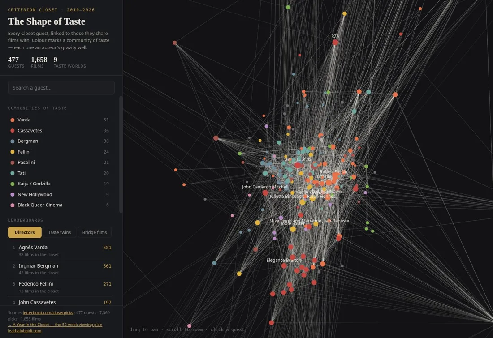

the shape of tasteFor fifteen years, filmmakers, actors and musicians have been filmed picking favourites from the Criterion Collection's closet. I turned all 477 visits into a database of 7,360 picks across 1,658 films — enriched with Letterboxd and IMDb ratings — then built two things from it. A taste map links every guest to those they share films with, revealing nine communities of taste that map onto auteur canons (Varda, Cassavetes, Bergman… and a Godzilla cluster). A 52-week syllabus distils the data into an actual viewing plan.
What's in it
- The Shape of Taste — an interactive network of all 477 guests, coloured by community, click any for their picks and taste twins
- A Year in the Closet — 52 films, one a week, with progress tracking and pace planning
- Open dataset — the full guests / picks / films tables as CSV and SQLite